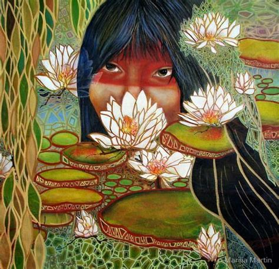

Iara is a mermaid who seduces men with beauty and song. Most of her victims are killed by drowning; the few who survive an encounter with this siren end up going nuts. Originally, Iara was a Tupi Indian laborer and the daughter of a shaman. She was so hardworking and brave that other workers, particularly her own brothers, became jealous. One night, her brothers ganged up and tried to end her, but she defended herself and killed them instead. Frightened, she fled to the jungle, but a search party tracked her down and tossed her into the famous encontro das águas (meeting of waters) at the rivers Negro and Solimões, near Manaus, Amazonas.
The search party left Iara to drown. However, fish floated her body to the surface, and the light of the full moon transformed her into a long-haired, green-eyed mermaid. By way of revenge, she now spends her days luring sailors into the water and murdering them, and it would seem that she’s just as good a man-drowner as a laborer. The legend of Iara is thought to be a conflation of the European mermaid myths and an old Tupi legend of a giant, ferocious fish called ipupiara that would emerge from rivers with a vengeance to turn the tables on fishermen.